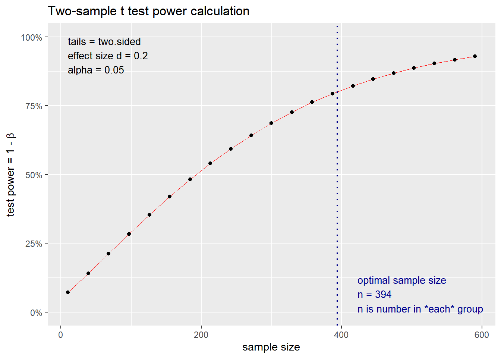
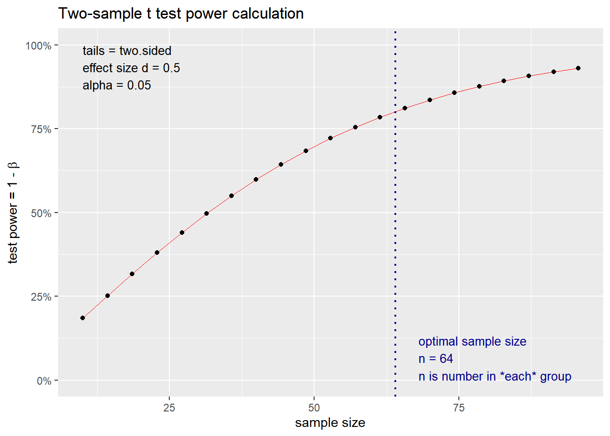
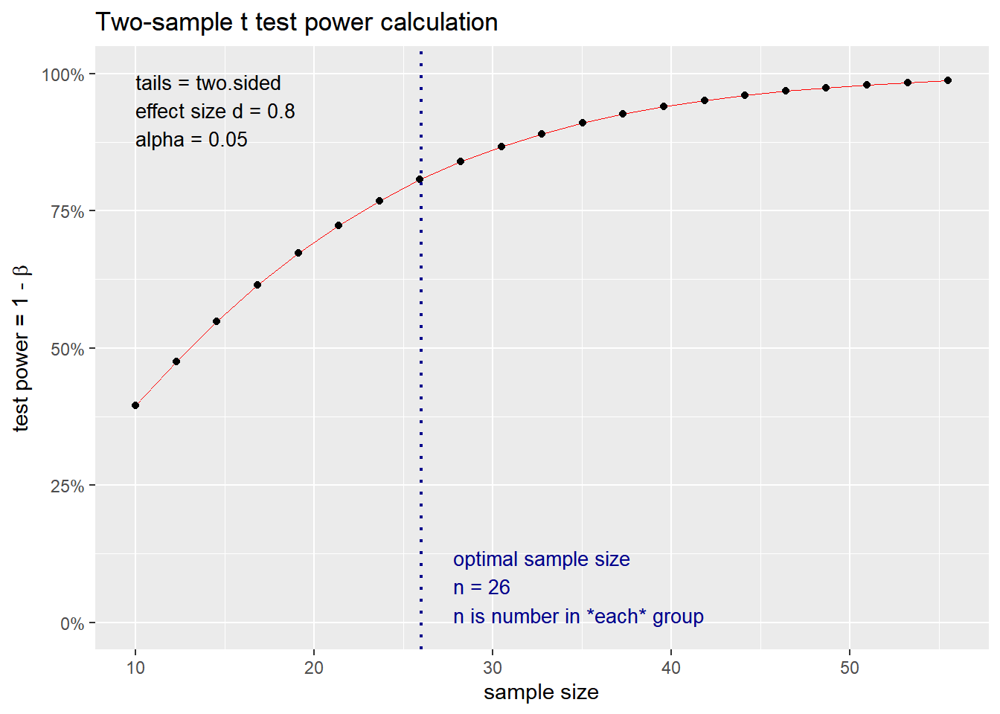
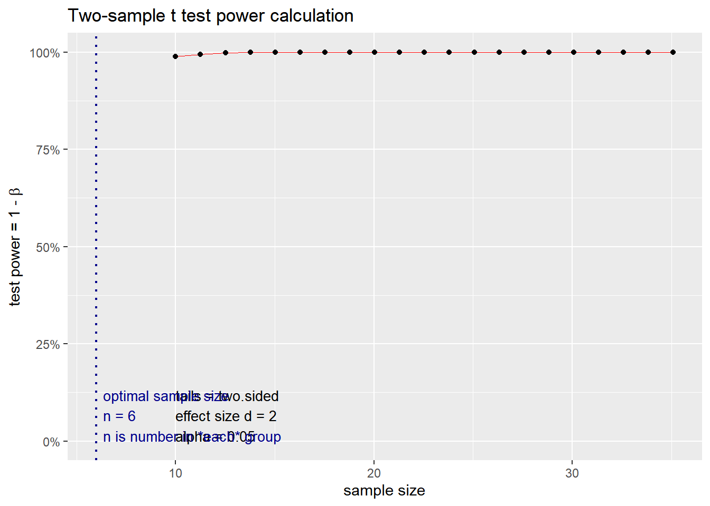
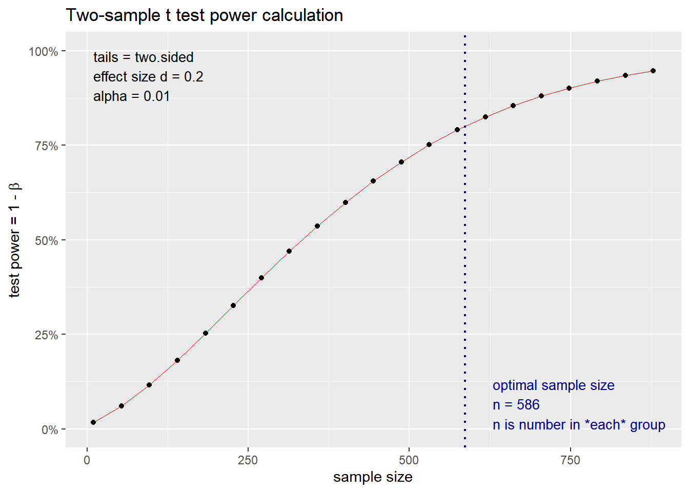
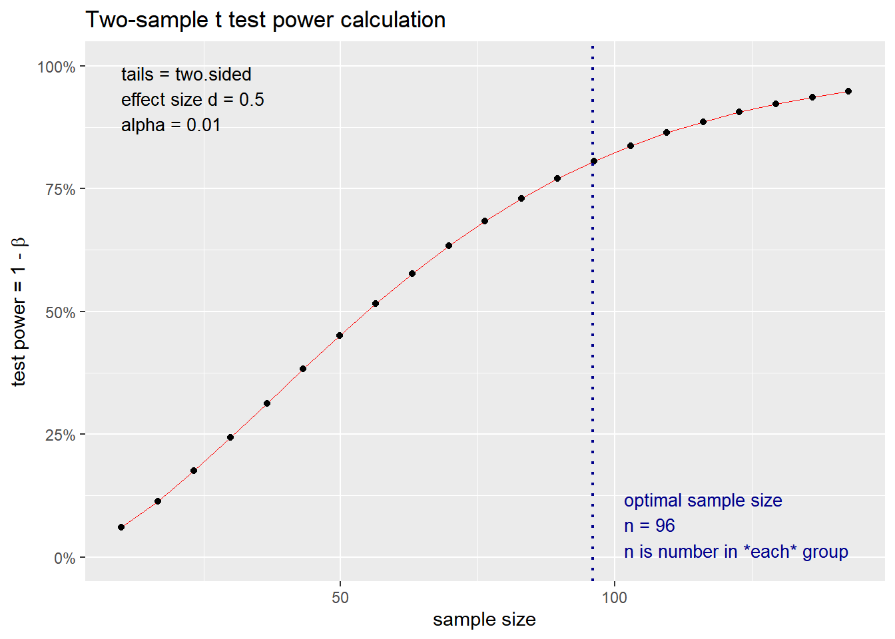
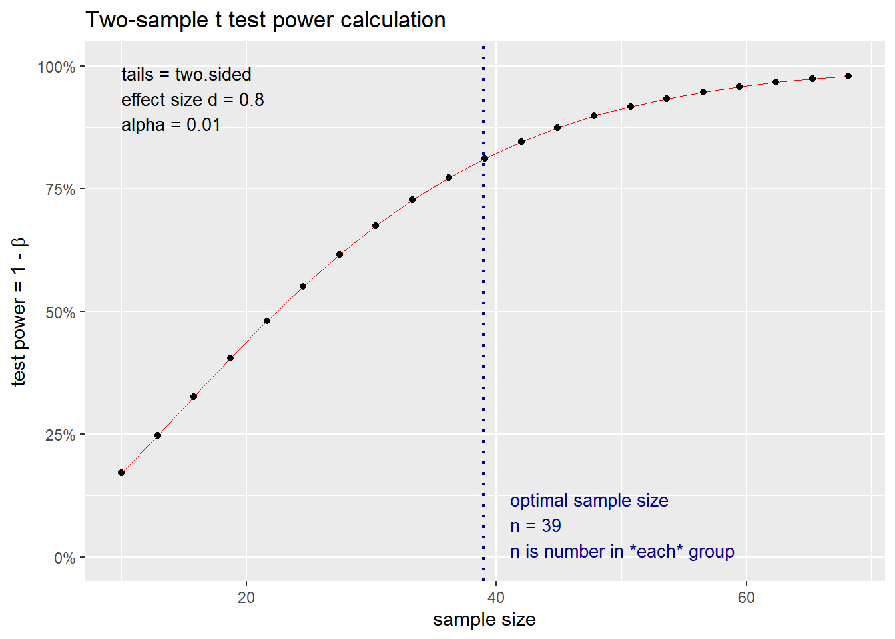
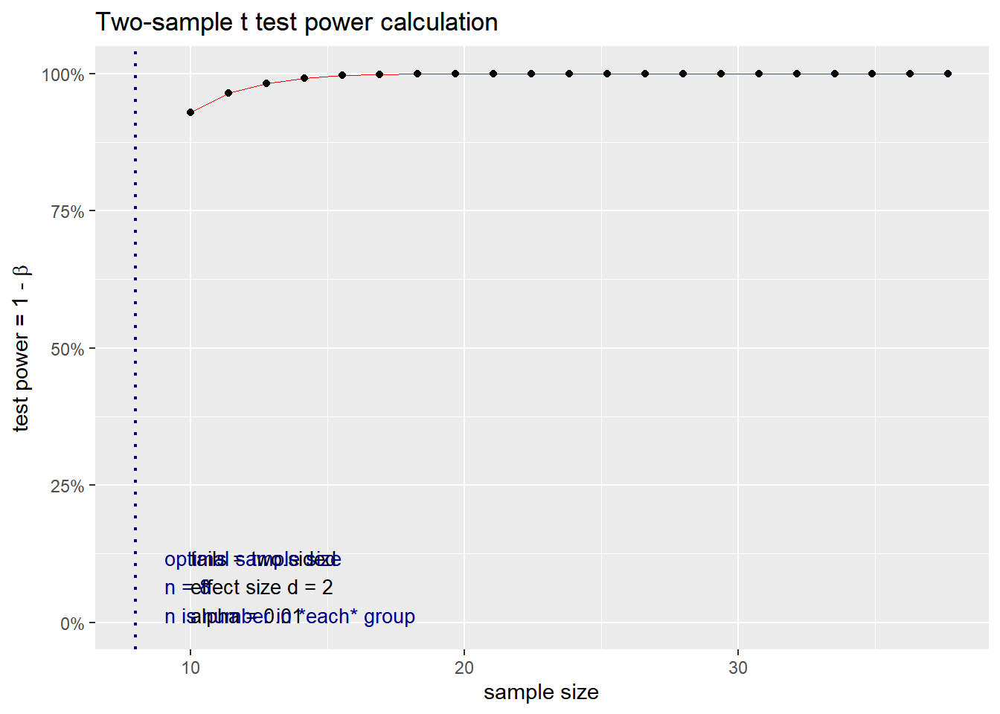

2.3 Effect size and power analysis
2.3.1 Effect size
2.3.1.1 What is the purpose of Effect Size?
‘Effect size’ is simply a way of quantifying the size of the difference between two groups.
There are two family groups of Effect Size:
Standardised mean differences (also called group difference indices; e.g., Cohen’s d), The mean difference Effect Sizes are computed when the focus of the statistical analysis uses mean outcome scores to compare potential group differences.
Strength of association (also referred to as relationship variance-accounted-for or variance explained Effect Sizes; e.g., \(R^{2}\), \(\eta^{2}\), \(\eta^{2}p\), \(\omega^{2}\), etc. Strength of association Effect Size indices are calculated across a wide variety of research designs (e.g., ex post facto or causal comparative, experimental, quasi-experimental, prediction [regression and correlational]) using the general linear model (GLM) for the statistical analyses. Strength of association Effect Sizes indicate how much of the variance associated with the dependent variable (e.g., students’ English test scores) can be accounted for (or explained) by the independent variable(s) (e.g., gender).
Both Effect Size families can be further categorised into biased (uncorrected) and unbiased (corrected) measures:
- Biased measures relates to “sampling error” and how the Effect Size derived from statistical procedures computed with smaller groups of participants (samples) drawn from a larger population will be higher than would be found either in the original population or in participant samples studied at a later date.
For example, assume a school counselling researcher randomly selects a sample of 15 girls and 15 boys from a 10th-grade physical education class in one high school. This 30-person sample then is assumed to represent the entire population of male and female students attending all Grade 10 physical education classes across a district’s five high schools. Because there is always sampling error (i.e., problems with selecting the students to participate in the research study), uncorrected Effect Sizes (e.g., Cohen’s d, \(R^{2}\), \(\eta^{2}\)) will be higher (i.e., positively biased or overestimated) for the 30 students than if the researcher actually could have included in the study every 10th-grade physical education student across all five high schools.
- Unbiased ones (e.g., adjusted \(R^{2}\), Hays’ \(\omega^{2}\), etc. ) statistically correct for this positive bias by calculating the strength of association indices so that they better reflect the true Effect Sizes for the entire population and those calculated in future samples.
The issue is that because these formulas must adjust for sampling error occurring both in the present study and in subsequent investigations, Effect Size estimates for future research samples result in more shrinkage (i.e., are smaller or more conservative) than those Effect Size estimates based on an entire population. Therefore, interpretation of Effect Size s is often less than straightforward and must be exercised with caution.
2.3.1.2 What is the relationship between Effect Size and Significance?
Effect size quantifies the size of the difference between two groups, and may therefore be said to be a true measure of the significance of the difference.
The statistical significance is usually calculated as a ‘p-value’, the probability that a difference of at least the same size would have arisen by chance, even if there really were no difference between the two populations. For differences between the means of two groups, this p-value would normally be calculated from a ‘t-test’. By convention, if p < 0.05 (i.e. below 5%), the difference is taken to be large enough to be ‘significant’; if not, then it is ‘not significant’.
There are a number of problems with using ‘significance tests’ in this way. The main one is that the p-value depends essentially on two things:
- The size of the effect
- The size of the sample.
One would get a ‘significant’ result either if the effect were very big (despite having only a small sample) or if the sample were very big (even if the actual effect size were tiny). It is important to know the statistical significance of a result, since without it there is a danger of drawing firm conclusions from studies where the sample is too small to justify such confidence. However, statistical significance does not tell you the most important thing: the size of the effect. One way to overcome this confusion is to report the effect size, together with an estimate of its likely ‘margin for error’ or ‘confidence interval’.
2.3.1.3 What is Confidence Interval?
The confidence interval is an alternative way to indicate the variability in estimates from small samples. The default calculation here is a ‘95% confidence interval’. If multiple samples of two groups of the same size as these, taken from a population in which the true difference was the value in column J, there would be variation in the differences found. However, for every 100 samples taken, for 95 of them (on average) the difference would be between the lower and upper confidence limits. The confidence interval is usually interpreted as a ‘margin of uncertainty’ around the estimate of the difference between experimental and control groups.
2.3.1.4 Which Effect Size measure to use?
We highlighted above various effect size measures, e.g., Cohen’s d, \(R^{2}\), \(\eta^{2}\), \(\eta^{2}p\), \(\omega^{2}\). Which one to chose from? Well, all depends on the statistical approach you are using and whether you want to report on standardised or unstandardised measures.
However, as a rule of thumb, you can do the following:
In general, if we want to talk about the sample we have, we can use any biased method (like the eta-squared) because it estimates only for the sample and not the population.
If we want to generalise our results, we have to use an unbiased method.
Literature recommends using an Effect Size measure accompanied with the Confidence Interval, because telling only that a result is statistically significant doesn’t inform us of the contribution of the independent variable to explain the variation in the dependent variable.
2.3.1.5 How to compute these in R
We use the package effectsize
2.3.1.5.1 Standardised effect sizes (Cohen’s d)
It can be computed using the following formula:
\(d=\frac{{Mean}_{factor1}-\ {Mean}_{factor2}}{{SD}_{pooled}}\)
With the pooled standard deviation computed as:
\({SD}_{pooled}=\sqrt{\frac{{SD}_{factor1}^2\ast\left({Number}_{factor1}-1\right)+\ {SD}_{factor2}^2\ast\left({Number}_{factor2}-1\right)}{{Number}_{factor1}+\ {Number}_{factor2}-\ 2}}\)
Fortunately, instead of calculating it manually, we can use the function
cohens_d() from the package effectsize.
2.3.1.5.1.1 Linear model
options(es.use_symbols = TRUE)# get nice symbols when printing! (On Windows, requires R >= 4.2.0)
english %>%
lm(RTlexdec ~ AgeSubject, data = .) %>%
summary()##
## Call:
## lm(formula = RTlexdec ~ AgeSubject, data = .)
##
## Residuals:
## Min 1Q Median 3Q Max
## -0.25776 -0.08339 -0.01669 0.06921 0.52685
##
## Coefficients:
## Estimate Std. Error t value Pr(>|t|)
## (Intercept) 6.660958 0.002324 2866.44 <2e-16 ***
## AgeSubjectyoung -0.221721 0.003286 -67.47 <2e-16 ***
## ---
## Signif. codes: 0 '***' 0.001 '**' 0.01 '*' 0.05 '.' 0.1 ' ' 1
##
## Residual standard error: 0.1111 on 4566 degrees of freedom
## Multiple R-squared: 0.4992, Adjusted R-squared: 0.4991
## F-statistic: 4552 on 1 and 4566 DF, p-value: < 2.2e-16What the model above tells us is that there is a very highly statistically significant impact of AgeSubject on RTlexdec (p < 0.0001).
2.3.1.5.1.2 Cohen’s d
However, it does not tell us how large this effect is. That is where we
can use the cohens_d() function.
## Cohen's d | 95% CI | Interpretation
## -----------------------------------------
## 2.00 | [1.93, 2.07] | large
##
## - Estimated using pooled SD.
## - Interpretation rule: cohen1988One nice option in the package effectsize is to use an Automated
Interpretation of Indices of Effect Size
vignette.
We can use the original publication to interpret the effect size or use
an alternative. See the link above for more details.
We can also standardise our model’s coefficients, which allows us to compare the effect sizes of different predictors in the same model and between models, variables and studies.
2.3.1.5.1.3 Standardised coefficients
##
## Call:
## lm(formula = RTlexdec ~ AgeSubject, data = data_std)
##
## Coefficients:
## (Intercept) AgeSubjectyoung
## 0.7065 -1.4130## # Standardization method: refit
##
## Parameter | Std. Coef. | 95% CI
## ------------------------------------------------
## (Intercept) | 0.71 | [ 0.68, 0.74]
## AgeSubject [young] | -1.41 | [-1.45, -1.37]Standardised coefficients are interpreted as the change in standard
deviations of the outcome variable for a one standard deviation change
in the predictor variable. We can initially standardise our outcomes
using the function scale(center = TRUE, scale = TRUE) and then run our
model, OR use the function standardize() from the package datawizard
or standardize_parameters() from the package parameters to do that.
2.3.1.5.2 Strength of association effect sizes
Here, we saw already that there are biased and unbiased measures. We will document the classical measures used.
2.3.1.5.2.1 \(R^{2}\)
\(R^{2}\) (R squared): It is the proportion of variance explained by the model. This is a biased effect size measure. It is computed as:
\(R^2=\frac{SS_{model}}{SS_{total}}=1-\frac{SS_{residual}}{SS_{total}}\)
Where:
\(SS_{model}\) is the sum of squares of the model
\(SS_{total}\) is the total sum of squares
\(SS_{residual}\) is the sum of squares of the residuals.
We can get the \(R^{2}\) and the adjusted \(R^{2}\) from the summary of the model:
## [1] 0.49923## [1] 0.49912032.3.1.5.2.2 \(\eta^{2}\) (eta squared)
The eta-squared effect size measure is a biased measure and describes the ratio of variance explained in the dependent variable by a predictor (or factor) while controlling for other predictors (or in a simple way: it is the proportion of total variation attributable to the factor). The range is from 0 to 1 and it sums up to 1. Eta squared is a biased estimator of the variance explained by the model in the population (it only estimates effect size in the sample). On average it overestimates the variance explained in the population. . It is computed as:
\(\eta^{2}=\frac{SS_{model}}{SS_{total}}\)
\(SS_{model}\) is the sum of squares of the model
\(SS_{total}\) is the total sum of squares
\(SS_{residual}\) is the sum of squares of the residuals.
In a sense, both \(R^{2}\) and \(\eta^{2}\) are computed in the same way.
To obtain it directly from the model, we can use the function
eta_squared() from the package effectsize and specify
partial = FALSE.
# eta squared
english %>%
aov(RTlexdec ~ AgeSubject, data = .) %>%
eta_squared(., partial = FALSE) %>%
interpret_eta_squared()## # Effect Size for ANOVA (Type I)
##
## Parameter | η² | 95% CI | Interpretation
## -------------------------------------------------
## AgeSubject | 0.50 | [0.48, 1.00] | large
##
## - One-sided CIs: upper bound fixed at [1.00].
## - Interpretation rule: field20132.3.1.5.2.3 \(\eta^{2}p\) (partial eta squared)
\(\eta^{2}p\) (partial eta squared): “proportion of total variation attributable to the factor, partialling out (excluding) other factors from the total non error variation”. Partial eta squared is normally higher than eta squared (except in simple one-factor models). The range is from 0 to 1, and it sums up to more than 1 (except in one-way ANOVA). It is computed as:
\(\eta^{2}p=\frac{SS_{factor}}{SS_{factor}+SS_{error}}\)
Where:
\(SS_{factor}\) is the sum of squares of the factor
\(SS_{error}\) is the sum of squares of the error.
To obtain it directly from the model, we can use the function
eta_squared() from the package effectsize and specify
partial = TRUE.
# partial eta squared
english %>%
aov(RTlexdec ~ AgeSubject, data = .) %>%
eta_squared(., partial = TRUE) %>%
interpret_eta_squared()## For one-way between subjects designs, partial eta squared is equivalent
## to eta squared. Returning eta squared.## # Effect Size for ANOVA
##
## Parameter | η² | 95% CI | Interpretation
## -------------------------------------------------
## AgeSubject | 0.50 | [0.48, 1.00] | large
##
## - One-sided CIs: upper bound fixed at [1.00].
## - Interpretation rule: field20132.3.1.5.2.4 \(\omega^{2}\) (omega squared)
\(\omega^{2}\) (omega squared): Provides a relatively unbiased estimate of the variance explained in the population by a predictor variable. It takes random error into account more so than eta squared, which is incredibly biased to be too large. The range is from 0 to 1 and it sums up to 1.
It is computed as:
\(\omega^{2}=\frac{SS_{model}-(df_{model}\ast MS_{error})}{SS_{total}+MS_{error}}\)
Where:
\(SS_{model}\) is the sum of squares of the model
\(SS_{total}\) is the total sum of squares
\(df_{model}\) is the degrees of freedom of the model
\(MS_{error}\) is the mean square of the error.
To obtain it directly from the model, we can use the function
omega_squared() from the package effectsize and specify
partial = FALSE.
# omega squared
english %>%
aov(RTlexdec ~ AgeSubject, data = .) %>%
omega_squared(., partial = FALSE) %>%
interpret_omega_squared()## # Effect Size for ANOVA (Type I)
##
## Parameter | ω² | 95% CI | Interpretation
## -------------------------------------------------
## AgeSubject | 0.50 | [0.48, 1.00] | large
##
## - One-sided CIs: upper bound fixed at [1.00].
## - Interpretation rule: field20132.3.1.5.2.5 Partial \(\omega^{2}\) (partial omega squared)
Partial \(\omega^{2}\) (omega squared): “proportion of total variation attributable to the factor, partialling out (excluding) other factors from the total non error variation”. The range is from 0 to 1 and it sums up to more than 1 (except in one-way ANOVA). It is the equivalent of partial eta-squared but as an unbiased measure. It is computed as:
\(\omega^{2}p=\frac{df_{factor}\ast MS_{factor}-MS_{error})}{df_{factor}\ast MS_{factor}+df_{total}- df_{factor}\ast MS_{error})}\)
Where:
\(df_{factor}\) is the degrees of freedom of the factor
\(MS_{factor}\) is the mean square of the factor
\(df_{total}\) is the total degrees of freedom
\(MS_{error}\) is the mean square of the error.
To obtain it directly from the model, we can use the function
omega_squared() from the package effectsize and specify
partial = TRUE.
# omega squared partial
english %>%
aov(RTlexdec ~ AgeSubject, data = .) %>%
omega_squared(., partial = TRUE) %>%
interpret_omega_squared()## For one-way between subjects designs, partial omega squared is
## equivalent to omega squared. Returning omega squared.## # Effect Size for ANOVA
##
## Parameter | ω² | 95% CI | Interpretation
## -------------------------------------------------
## AgeSubject | 0.50 | [0.48, 1.00] | large
##
## - One-sided CIs: upper bound fixed at [1.00].
## - Interpretation rule: field20132.3.1.5.2.6 Odds ratio
We will see in the sections 2.6 and 3.4 that we use odds ratio as an exponentiation of the logodds (logit) coefficients. Odds ratios can be interpreted as the odds for an event to occur. In comparison to the logodds (logit) scale, which spans -6 and 6 (well \(-\infty\) - \(\infty\)), odds ratio are very (very high) and can reach 999 for a logodds of 6.9. Of course, in some cases, odds ratio are not easy to interpret, and it is often “easier” to transform the logodds into proportions. See this excellent link where you can understand the links better.
2.3.2 Power analysis and sample size
Usually, when we design an experiment, we always ask the question: what is the optimal sample size to use so that I have confidence in the results I will obtain? To answer this question, we usually say: well it all depends on your discipline and what is feasible for a particular study. However, this can easily lead to misconceptions and issues in designing our studies and more importantly, in the interpretation of the results!
Hence, we demonstrate in the following power analysis and the sample size. These two are crucial as they are interlinked. We saw in section 2.2.4 that there are four types of errors, with Type M and Type S depending heavily on the power and on the sample size.
We use the package pwr, which allows us to compute both power and
sample size (but not at the same time!!). Looking at the vignette of
the pwr
package,
they cite the various functions available, such as:
pwr.p.test: one-sample proportion testpwr.2p.test: two-sample proportion testpwr.2p2n.test: two-sample proportion test (unequal sample sizes)pwr.t.test: two-sample, one-sample and paired t-testspwr.t2n.test: two-sample t-tests (unequal sample sizes)pwr.anova.test: one-way balanced ANOVApwr.r.test: correlation testpwr.chisq.test: chi-squared test (goodness of fit and association)pwr.f2.test: test for the general linear model
2.3.2.1 Cohen’s d interpretation rules and t.test
Based on J. Cohen (1988) rule of thumb, we can interpret Cohen’s d effect size measure as:
d < 0.2 - Very small
0.2 <= d < 0.5 - Small
0.5 <= d < 0.8 - Medium
d >= 0.8 - Large
We can use the function pwr.t.test() to compute the power of a t.test.
2.3.2.1.1 pwr.t.test - one-sample and two-sample t tests for means
Based on the example below, we know that the variance between the two age groups with respect to RTlexdec is significantly different; meaning that there is no equality of variance in this case. This is important to know to be able to compute the t.test appropriately.
Here are the results of the t.test between the two groups:
##
## Welch Two Sample t-test
##
## data: RTlexdec by AgeSubject
## t = 67.468, df = 4534.6, p-value < 2.2e-16
## alternative hypothesis: true difference in means between group old and group young is not equal to 0
## 95 percent confidence interval:
## 0.2152787 0.2281642
## sample estimates:
## mean in group old mean in group young
## 6.660958 6.4392372.3.2.1.2 Cohen’s d effect size
## Cohen's d | 95% CI | Interpretation
## -----------------------------------------
## 2.00 | [1.93, 2.07] | large
##
## - Estimated using pooled SD.
## - Interpretation rule: cohen1988##
## Conventional effect size from Cohen (1982)
##
## test = t
## size = large
## effect.size = 0.8##
## Two-sample t test power calculation
##
## n = 2284
## d = 2
## sig.level = 2.2e-16
## power = 1
## alternative = two.sided
##
## NOTE: n is number in *each* groupThe results here show that with a sample size of 2284, a large effect size of 2 and a significance level of 2.2e-16, we have a power of 1 (or 100%). This is a massive power and effect size, but we know that the results are inflated de to not using a mixed effects model.
Now, let’s imagine we use another sample.
We’re interested to know if there is a difference in the mean reaction time in a lexical decision task between young and old participants. Let’s say we randomly ask 30 young and 30 old participants to perform the test and and calculate the mean reaction time for each group. We’ll test for a difference in means using a two-sample t-test.
How powerful is this experiment if we want to detect a “medium” effect in either direction with a significance level of 0.001?
Unfortunately, we don’t have any idea what the number of participants in the english dataset. It is composed of 2284 monomorphemic English nouns and verbs that are averaged across old and young subjects.
##
## Conventional effect size from Cohen (1982)
##
## test = t
## size = large
## effect.size = 0.8##
## Two-sample t test power calculation
##
## n = 30
## d = 0.8
## sig.level = 0.01
## power = 0.6677563
## alternative = two.sided
##
## NOTE: n is number in *each* groupThe power is only at 66.78%! Not very powerful. How many students should we observe for a test with 80% power?
##
## Two-sample t test power calculation
##
## n = 38.18831
## d = 0.8
## sig.level = 0.01
## power = 0.8
## alternative = two.sided
##
## NOTE: n is number in *each* groupWe need at least 38 students per group. If we lower our p value, the sample size will increase drastically
2.3.2.1.3 Plots
The pwr package comes with a handy plotting function that we can use to evaluate the impact of the increase in power, effect size and sample size for a specific p value
2.3.2.1.3.1 p < 0.05
What if we use a specific p value < 0.05 and a power of 0.80? How does the change in effect size impact the sample size? We simulate variable effect size measures at 0.2, 0.5, 0.8 and 2 based on the interpretation above.
Based on J. Cohen (1988) rule of thumb, we can interpret Cohen’s d effect size measure as:
d < 0.2 - Very small
0.2 <= d < 0.5 - Small
0.5 <= d < 0.8 - Medium
d >= 0.8 - Large
##
## Two-sample t test power calculation
##
## n = 393.4057
## d = 0.2
## sig.level = 0.05
## power = 0.8
## alternative = two.sided
##
## NOTE: n is number in *each* group## Warning: Using `size` aesthetic for lines was deprecated in ggplot2 3.4.0.
## ℹ Please use `linewidth` instead.
## ℹ The deprecated feature was likely used in the pwr package.
## Please report the issue to the authors.
## This warning is displayed once every 8 hours.
## Call `lifecycle::last_lifecycle_warnings()` to see where this warning
## was generated.
##
## Two-sample t test power calculation
##
## n = 63.76561
## d = 0.5
## sig.level = 0.05
## power = 0.8
## alternative = two.sided
##
## NOTE: n is number in *each* group
##
## Two-sample t test power calculation
##
## n = 25.52458
## d = 0.8
## sig.level = 0.05
## power = 0.8
## alternative = two.sided
##
## NOTE: n is number in *each* group
##
## Two-sample t test power calculation
##
## n = 5.089995
## d = 2
## sig.level = 0.05
## power = 0.8
## alternative = two.sided
##
## NOTE: n is number in *each* group
2.3.2.1.3.2 p < 0.01
We do the same as above but we change the p value < 0.01 and a power of 0.80? How does the change in effect size impact the sample size? We simulate variable effect size measures at 0.2, 0.5, 0.8 and 2 based on the interpretation above.
Based on J. Cohen (1988) rule of thumb, we can interpret Cohen’s d effect size measure as:
d < 0.2 - Very small
0.2 <= d < 0.5 - Small
0.5 <= d < 0.8 - Medium
d >= 0.8 - Large
##
## Two-sample t test power calculation
##
## n = 585.6093
## d = 0.2
## sig.level = 0.01
## power = 0.8
## alternative = two.sided
##
## NOTE: n is number in *each* group
##
## Two-sample t test power calculation
##
## n = 95.10364
## d = 0.5
## sig.level = 0.01
## power = 0.8
## alternative = two.sided
##
## NOTE: n is number in *each* group
##
## Two-sample t test power calculation
##
## n = 38.18831
## d = 0.8
## sig.level = 0.01
## power = 0.8
## alternative = two.sided
##
## NOTE: n is number in *each* group
##
## Two-sample t test power calculation
##
## n = 7.66057
## d = 2
## sig.level = 0.01
## power = 0.8
## alternative = two.sided
##
## NOTE: n is number in *each* group
The plot above show the sample size required for the specific power, p value and effect size. Play around with these values to have an idea of the impact of these parameters on the sample size.
2.3.2.2 Linear model
2.3.2.2.1 General example
We borrow from the vignette of the pwr package an example of a linear
model.
2.3.2.2.1.1 Power of the test
We want to compute the power we have with a sample size of 40 words, an effect size of 0.3 and a significance level of 0.001.
##
## Multiple regression power calculation
##
## u = 1
## v = 38
## f2 = 0.4285714
## sig.level = 0.001
## power = 0.7104043Where:
u = number of predictors
v = degrees of freedom of the residuals (n - u - 1)
f2 = effect size (Cohen’s f2)
sig.level = significance level (alpha)
2.3.2.2.1.2 Sample size
We want to compute the sample size needed to have a power of 0.8, with a significance level of 0.001 and an effect size of 0.3 (medium effect size according to Cohen’s conventions).
##
## Multiple regression power calculation
##
## u = 1
## v = 43.35263
## f2 = 0.4285714
## sig.level = 0.001
## power = 0.8Where:
u = number of predictors
f2 = effect size (Cohen’s f2)
sig.level = significance level (alpha)
power = desired power (1 - beta)
Recall \(n = v + u + 1\). Therefore, we need 43.35263 + 1 + 1 = 45.35263 ~ 45 words.
2.3.2.2.2 Using our LM model
In our case, we use the dataset english from the languageR package.
We used AgeSubject as our predictor to predict RTlexdec. What if we want
to compute the power of our model that we ran previously? Here is the
summary of our model
##
## Call:
## lm(formula = RTlexdec ~ AgeSubject, data = .)
##
## Residuals:
## Min 1Q Median 3Q Max
## -0.25776 -0.08339 -0.01669 0.06921 0.52685
##
## Coefficients:
## Estimate Std. Error t value Pr(>|t|)
## (Intercept) 6.660958 0.002324 2866.44 <2e-16 ***
## AgeSubjectyoung -0.221721 0.003286 -67.47 <2e-16 ***
## ---
## Signif. codes: 0 '***' 0.001 '**' 0.01 '*' 0.05 '.' 0.1 ' ' 1
##
## Residual standard error: 0.1111 on 4566 degrees of freedom
## Multiple R-squared: 0.4992, Adjusted R-squared: 0.4991
## F-statistic: 4552 on 1 and 4566 DF, p-value: < 2.2e-162.3.2.2.2.1 Power analysis from our model
Recall that the F test has numerator and denominator degrees of freedom.
The numerator degrees of freedom, u, is the number of coefficients
you’ll have in your model (minus the intercept).
The effect size, f2, is \(R^{2}/(1 - R^{2})\), where \(R^{2}\) is the
coefficient of determination, aka the “proportion of variance
explained”. To determine effect size you hypothesize the proportion of
variance your model explains, or the \(R^{2}\).
Once we computed these three values, we can compute the power of our model based on its summary.
u <- summary(model)$fstatistic[2]
v <- summary(model)$fstatistic[3]
f2 <- summary(model)$r.squared/(1 - summary(model)$r.squared)
# p.value <- summary(model)$coefficients[2,4]
p.value <- 0.0001
pwrModel <- pwr.f2.test(u = u, v = v, f2 = f2, sig.level = p.value)
pwrModel##
## Multiple regression power calculation
##
## u = 1
## v = 4566
## f2 = 0.9969247
## sig.level = 1e-04
## power = 12.3.2.2.2.2 Sample size
For the optimal sample size, we use the same values for u, f2 and
p.value as above, but we specify the power we want to have. Here, we
use the power we obtained from our model above.
##
## Multiple regression power calculation
##
## u = 1
## v = 1e+09
## f2 = 0.9969247
## sig.level = 1e-04
## power = 1Based on the output, we can compute the optimal sample size needed for our model as
## numdf
## 1e+09The optimal sample size to reach this level of power is 1,000,000,000 words! BUT we do not have that many words in our dataset. This is kind of telling us that there are serious issues in our model. In fact, we see that we have a power of 1, which is very high power. However, we know very well that our linear model is inaccurate. We did not tell our model that the data comes from multiple words, and that we really need to compute a mixed effects regression (see Section 3.3 from chapter 3).